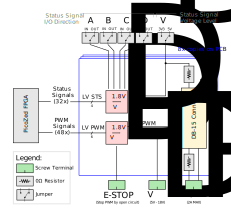
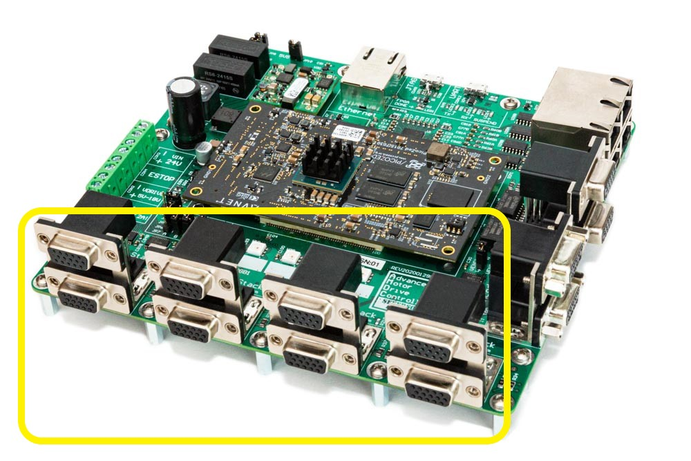
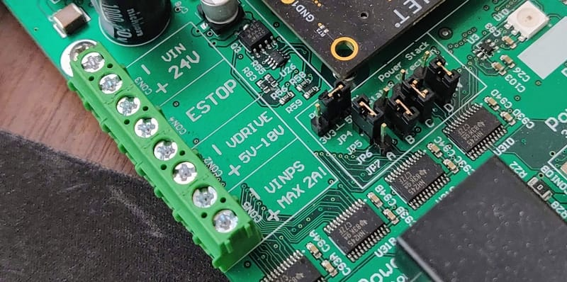

Power Stack Interface¶
This document describes the design considerations and implementation details for the power stack interface subsystem on the Advanced Motor Drive Controller (AMDC).
Relevant Versions of AMDC Hardware¶
AMDC REV D
Design Requirements and Considerations¶
The power stack interface was designed with the following requirements:
Drive 8 three-phase two-level inverters (6 PWM signals each)
Support status monitoring for each inverter (4 I/O channels each)
Configurable voltage level for PWM signals
Configurable voltage level and direction for status line I/O
Provide power distribution from seperate AMDC screw terminals to all power stacks
Hardware E-STOP functionality to disable all PWM (no firmware needed)
Block Diagram¶

The full power stack interface block diagram is shown above. It is compacted into 8x duplicated channels for easy representation. The connectors and jumpers depicted outside of the blue box are not replicated on the PCB.
Each DB-15 connector is designed to control a single three-phase two-level inverter. This includes six PWM signals and four status signals. The user can configure the voltage for both the status and PWM signals independently. The user can also supply each inverter with a power supply designed to run the gate drivers that is distributed through the AMDC; this reduces wire routing overall. Finally, all PWM outputs are only enabled when the E-STOP input is disabled. If the E-STOP input becomes open-circuit, all PWM signals go to a low state, thus turning off all switches.
 
1. PWM Signals¶
The PWM gate drive signals are generated by the PicoZed FPGA at 1.8V. These are then level-shifted up to the user-supplied VDRIVE voltage. Each PWM signal then goes to the DB-15 connector. Each PWM signal is ANDed with the E-STOP signal. Thus, when the E-STOP is opened, the PWM signals go to a logic low state.
2. Status Signals¶
Each inverter has four status lines (labeled A, B, C, and D). These signals operate at the VDD voltage level, which is configurable by the jumper on the PCB. Each status line (A/B/C/D) can be configured as either an input or output, depending on the jumper selection. Note that all eight inverters use the same directionality for the status signals (i.e. if status signal A is an input, it is an input for all eight inverters).
These status signals can be used as arbitrary I/O between the AMDC and the power stack. Typically, they are used to read fault states, reset the power stack, read ready states from the power stack gate drives, etc. The voltage level which is selected by the jumper on the AMDC is supplied to each DB-15 connector so the power stack can use the correct I/O voltage level for communication.
Jumpers¶
On the AMDC, the following are the jumpers used to set status line voltage level and direction:
JP1: Status voltage level
JP4: Status A direction
JP5: Status B direction
JP6: Status C direction
JP7: Status D direction
3. Voltage Rails¶
There are three voltage rails which must be understood for the power stack interface: VDD, VDRIVE, and VPS.
The AMDC as a whole has various voltage rails which are outlined in the Power Distribution document. However, the power stack interface subsystem adds two extra voltage rails to the mix: VDRIVE and VPS. These are user-supplied via external inputs. The power stack VDD rail is jumpered to either the main 5V or 3.3V rail.
VPS — Power Stack General Voltage Supply¶
This voltage rail (the “power stack voltage rail”) is completely independent from the AMDC; the AMDC simply acts as a power distribution network for this rail. On the AMDC, one screw terminal input is used to supply both the + and - rail of VPS. Then, the AMDC routing distributes this power rail to each DB-15 connector. This power rail is designed to supply the bulk power required by the power stack gate drivers. Usually, 12V or 24V is used for this. Note that the AMDC trace routing for this signal can only support 2A. At 24V, this would mean 48W power consumption for all power stack gate drives (or 6W each). If the user needs a more powerful gate drive, they must use an external power source for it.
Note that this voltage rail passes through a 1206 0R resistor for each DB-15 connector (i.e. each inverter). Thus, the user may depopulate this resistor if needed to remove this voltage rail from the connector.
VDRIVE — Power Stack PWM Voltage Level¶
This voltage rail (the “power stack PWM drive voltage”) is supplied via the AMDC screw terminal input. This sets the voltage level used for the PWM signals that go to the power stacks. The user must supply a valid voltage at this input for the PWM outputs to function (5V to 18V). The PWM voltages will then be square waves which go between 0V (the AMDC GND) and the user-supplied VDRIVE. Note that this signal is NOT intended to directly drive the power electronic switch gates in the power stack; this signal controls the gate drive circuitry on the power stack. For high noise immunity, use larger VDRIVE voltages. Nominally, 5V is fine if proper shielding is used to block EMI.
Power Requirements for VDRIVE¶
The external VDRIVE supply only powers the AMDC PWM circuitry, not the gate drives themselves. Therefore, the power drawn from the external VDRIVE supply can be approximated as depending on the PWM switching frequency fsw, the VDRIVE voltage level, and the total line capacitance Ctotal between the AMDC and the power stacks:
Given typical values fsw = 100kHz, Ctotal = 500pF, VDRIVE = 5V, then the current draw on the external 5V power supply is about 1mA.
VDD — Power Stack Status Voltage Level¶
This voltage rail (the “power stack status line voltage”) is either 5V or 3.3V, and is selected using the jumper on the AMDC. This voltage is used for the logic high level of the status line signals between the AMDC and the power stack. The logic low level is the 0V AMDC GND signal. This voltage is supplied to each DB-15 connector so the power stack can appropriately drive the status lines.
Note that this voltage rail passes through a 1206 0R resistor for each DB-15 connector (i.e. each inverter). Thus, the user may depopulate this resistor if needed to remove this voltage rail from the connector.
Power Requirements for VDD¶
VDD is supplied by the internal 5V or 3.3V rail on the AMDC. This rail is typically not used as power for dynamic switching, since it is the I/O voltage level for the status lines. The status signals are typically DC values. Therefore, the power drawn from the internal AMDC rails is negligible compared to their capability.
DB-15 Connectors¶
The AMDC has 8x DB-15 connectors, one for each of the eight inverters. The DB-15 connectors are grouped into stacks of two, so there are four total stacks of DB-15 connectors across the front of the PCB. In the schematics, the top DB-15 connector in each stack is labeled as A and the bottom as B. The inverter numbering is as follows:
Silkscreen Label |
Top / Bottom |
Inverter # |
|---|---|---|
|
Top |
|
|
Bottom |
|
|
Top |
|
|
Bottom |
|
|
Top |
|
|
Bottom |
|
|
Top |
|
|
Bottom |
|
DB-15 Connector Pinout¶
Each DB-15 connector uses the same pinout, but for its own inverter. For example, the top DB-15 of CON10A supplies the PWM and status signals for inverter #1, while the bottom DB-15 of CON10D is mapped to inverter #8.
Each DB-15 connector has three rows of pins (uses the high-density DB-15 format). The connector has tiny labels next to each pin hole which map to the schematic labeling. The following table indicates the pinout for each connector:
Pin # |
Signal Name |
|---|---|
1 |
|
2 |
|
3 |
|
4 |
|
5 |
|
6 |
|
7 |
|
8 |
|
9 |
|
10 |
|
11 |
|
12 |
|
13 |
|
14 |
|
15 |
|
To view the mapping between the AMDC schematic labels, PicoZed pins, and Zynq-7000 balls used in Vivado, take a look at the Power Stack section of the pin mapping document.
Mapping C Driver to FPGA to Hardware¶
The following explains the PWM signal mappings between embedded system layers (i.e. PCB connectors, schematics, FPGA, and C code). This section describes what is implemented in the default firmware. Note that the user can change the firmware which will invalidate the following discussion.
As mentioned above, each DB-15 connector maps to a single three-phase inverter: DB-15 connector pins 1 to 6 map to schematic labels PWM1 to PWM6. Each inverter has its own PWM signals, so the schematic labeling for inverter #1 uses INV1_PWM1 to INV1_PWM6. The same pattern is used for all eight inverters.
Typically, the odd-numbered PWM signals drive the high-side switches, while the even-numbered signals drive the low-side switches. However, this can be changed arbitarily in the FPGA firmware. In general, the PWM signals are just arbitrary outputs – they can be driven to any sequence in the FPGA and used in any way in the power stack.
To map the schematic signal labeling (e.g. INV1_PWM1) to the firmware drivers, a simple scheme is used: the PWM outputs are implemented as independent half-bridge legs in firmware. Each half-bridge consumes two PWM signals (for the high and low switches), so a total of 24 half-bridges can be realized. The user sets the duty ratio command for the half-bridge as a whole, and the FPGA creates the gate signals for the two corresponding PWM outputs (including configurable dead-time). The mapping between half-bridges and PWM signals is as follows:
Half-Bridge |
Inverter Leg |
PWM Signal Name (High-Side) |
PWM Signal Name (Low-Side) |
|---|---|---|---|
HB1 |
INV1, Leg 1 |
INV1_PWM1 |
INV1_PWM2 |
HB2 |
INV1, Leg 2 |
INV1_PMW3 |
INV1_PWM4 |
HB3 |
INV1, Leg 3 |
INV1_PWM5 |
INV1_PWM6 |
HB4 |
INV2, Leg 1 |
INV2_PWM1 |
INV2_PWM2 |
HB5 |
INV2, Leg 2 |
INV2_PWM3 |
INV2_PWM4 |
HB6 |
INV2, Leg 3 |
INV2_PWM5 |
INV2_PWM6 |
HB7 |
INV3, Leg 1 |
INV3_PWM1 |
INV3_PWM2 |
… |
… |
… |
… |
HB24 |
INV8, Leg 3 |
INV8_PWM5 |
INV8_PWM6 |
Example Pseudo-Code for Driving Power Electronics¶
In firmware, the above sequences tend to be 0 indexed. For example, in C code, to set a half-bridge duty ratio, the user would call the following C driver function:
pwm_set_duty(0, 0.5); // Set HB1 duty ratio to 50%
pwm_set_duty(23, 0.25); // Set HB24 duty ratio to 25%
Controlling a Three-Phase Inverter¶
Putting this all together, to control a three-phase inverter from C code, the user simply updates the desired duty ratio for three half-bridge legs. For example, to modulate sinusoidal voltages on inverter #1, the following C code can be used:
double Ts = 1.0 / 10000.0; // [sec]
double theta = 0.0; // [rad]
double omega = 1000.0; // [rad/s]
double Do = 0.4; // [--]
// This callback function is executed every Ts seconds (e.g. 1/10000 sec) by the system scheduler
void example_callback(void)
{
// Update theta
theta += (Ts * omega);
theta = fmod(theta, 2.0 * M_PI); // Wrap to 2*pi
// Calculate desired duty ratios
duty_a = 0.5 + Do * cos(theta);
duty_b = 0.5 + Do * cos(theta + 2.0*M_PI/3.0);
duty_c = 0.5 + Do * cos(theta + 4.0*M_PI/3.0);
// Update PWM peripheral in FPGA
pwm_set_duty(0, duty_a); // Set HB1 duty ratio (INV1, PWM1 and PWM2)
pwm_set_duty(1, duty_b); // Set HB2 duty ratio (INV1, PWM3 and PWM4)
pwm_set_duty(2, duty_c); // Set HB3 duty ratio (INV1, PWM5 and PWM6)
}
PCB Layout¶
The PCB layout is important for the high-speed digital PWM signals. The 48x PWM signals are spaced out on the PCB such that there is reduced capacitive coupling between them during signal switching edges. The power supply rail traces are thicker than other traces to accommodate the required current rating while minimally heating up the circuit board.